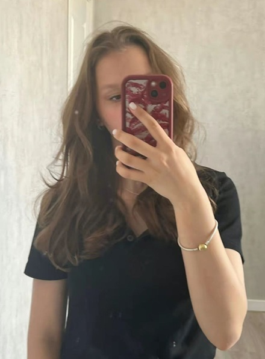
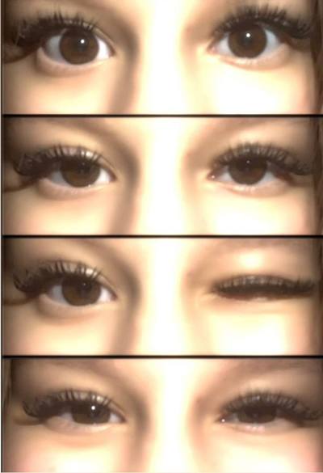
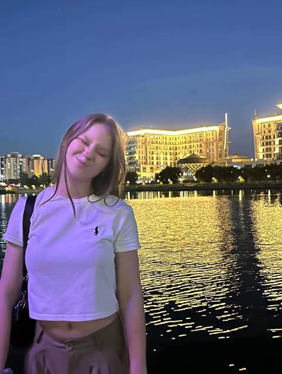
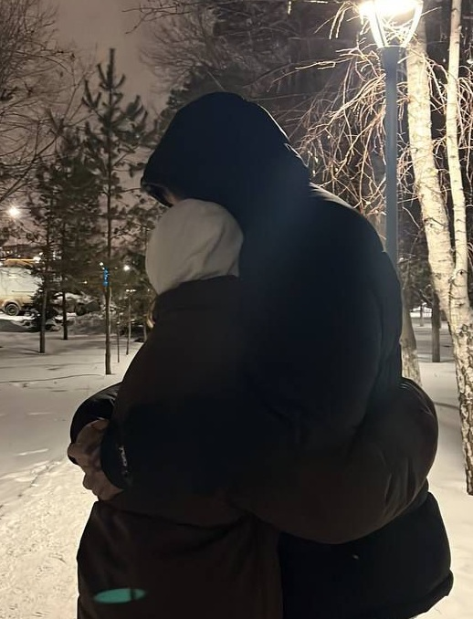

Мини сайт для Маришки
Есть люди, которые приходят в нашу жизнь случайно. Но остаются — как будто так и было задумано судьбой. Ты — именно такая. Ты появилась тихо, как лёгкий шёпот ветра… А стала чем-то настолько важным, что теперь без тебя невозможно представить ни один новый день. Твоя нежность — это искусство. Ты умеешь быть доброй не потому, что так нужно, а потому что в тебе живёт тёплое сердце. Хочу, чтобы ты слышала эти слова: Ты достойна самого бережного отношения. Ты достойна любви, которая не предаст. Ты достойна счастья, которое не уйдёт. Когда ты улыбаешься — ты не просто красивая. Ты — самая настоящая магия. Я хочу быть тем человеком, который будет рядом, когда твои руки дрожат, когда мир кажется слишком громким, когда внутри шторм… Я буду держать тебя крепко, так крепко, чтобы никакая буря не смогла утащить тебя из моих объятий. Ты — моя тишина, где я нахожу покой. Ты — моя музыка, которую хочется слушать снова и снова. Ты — моя весна, даже если за окном зима. Знаешь… есть чувства, которые даже словами трудно объяснить. Но я попробую: Ты — моё спокойствие и моё волнение. Моя мягкость и моё сердце. Мой свет и мой смысл. Я благодарен каждому дню, который привёл меня к тебе. Я горжусь тем, что могу говорить твоё имя. Я счастлив оттого, что оно звучит в моей груди: Ма-ри-шка… Этот звук — как прикосновение к душе. Мне хочется: — Слушать, как ты смеёшься, пока сердце не заболит от счастья. — Гладить твою ладонь, пока пальцы не забудут одиночество. — Встречать рассветы рядом с тобой, чтобы день начинался правильно — с твоего тепла. Хочу быть тем, кому ты доверяешь больше всех… Кому рассказываешь свои мечты и страхи. Кто знает, как согреть тебя словом и прикосновением. Я хочу: отгонять от тебя тревоги, стирать грусть с твоего лица, закрывать от всего, что может причинить боль. Если ты когда-нибудь заплачешь — я буду рядом, чтобы вытереть каждую слезу и сказать: «Ты не одна. Я здесь. И останусь». Если вдруг ты устанешь — я подставлю плечо, чтобы ты могла опереться. Если ты захочешь молчать — я буду просто сидеть рядом и держать тебя за руку. Потому что твоё сердце — самое драгоценное, что мне доверяла жизнь. Ты учишь меня любить правильно: мягко, бережно, искренне. С тобой хочется быть лучше — спокойнее, добрее, сильнее. С тобой приходит понимание, что настоящая любовь не кричит. Она обнимает. Греет. Дышит рядом. Я хочу пройти с тобой через радости и через трудности. Хочу видеть, как ты просыпаешься: сонная, настоящая, светлая. Хочу укрывать тебя ночью, когда ты вдруг замёрзнешь. Хочу тысячи дней рядом… и столько же ночей. Хочу не отпускать тебя ни на миг… даже когда мир будет тянуть нас в разные стороны.

Маришка… Есть люди, которые приходят в нашу жизнь случайно. Но остаются — как будто так и было задумано судьбой. Ты — именно такая. Ты появилась тихо, как лёгкий шёпот ветра… А стала чем-то настолько важным, что теперь без тебя невозможно представить ни один новый день. Твоя нежность — это искусство. Ты умеешь быть доброй не потому, что так нужно, а потому что в тебе живёт тёплое сердце. Хочу, чтобы ты слышала эти слова: Ты достойна самого бережного отношения. Ты достойна любви, которая не предаст. Ты достойна счастья, которое не уйдёт. Когда ты улыбаешься — ты не просто красивая. Ты — самая настоящая магия. Я хочу быть тем человеком, который будет рядом, когда твои руки дрожат, когда мир кажется слишком громким, когда внутри шторм… Я буду держать тебя крепко, так крепко, чтобы никакая буря не смогла утащить тебя из моих объятий. Ты — моя тишина, где я нахожу покой. Ты — моя музыка, которую хочется слушать снова и снова. Ты — моя весна, даже если за окном зима. Знаешь… есть чувства, которые даже словами трудно объяснить. Но я попробую: Ты — моё спокойствие и моё волнение. Моя мягкость и моё сердце. Мой свет и мой смысл. Я благодарен каждому дню, который привёл меня к тебе. Я горжусь тем, что могу говорить твоё имя. Я счастлив оттого, что оно звучит в моей груди: Ма-ри-ша… Этот звук — как прикосновение к душе. Мне хочется: — Слушать, как ты смеёшься, пока сердце не заболит от счастья. — Гладить твою ладонь, пока пальцы не забудут одиночество. — Встречать рассветы рядом с тобой, чтобы день начинался правильно — с твоего тепла. Хочу быть тем, кому ты доверяешь больше всех… Кому рассказываешь свои мечты и страхи. Кто знает, как согреть тебя словом и прикосновением. Я хочу: отгонять от тебя тревоги, стирать грусть с твоего лица, закрывать от всего, что может причинить боль. Если ты когда-нибудь заплачешь — я буду рядом, чтобы вытереть каждую слезу и сказать: «Ты не одна. Я здесь. И останусь». Если вдруг ты устанешь — я подставлю плечо, чтобы ты могла опереться. Если ты захочешь молчать — я буду просто сидеть рядом и держать тебя за руку. Потому что твоё сердце — самое драгоценное, что мне доверяла жизнь. Ты учишь меня любить правильно: мягко, бережно, искренне. С тобой хочется быть лучше спокойнее, добрее, сильнее. С тобой приходит понимание, что настоящая любовь не кричит. Она обнимает. Греет. Дышит рядом. Я хочу пройти с тобой через радости и через трудности. Хочу видеть, как ты просыпаешься: сонная, настоящая, светлая. Хочу укрывать тебя ночью, когда ты вдруг замёрзнешь. Хочу тысячи дней рядом… и столько же ночей. Хочу не отпускать тебя ни на миг… даже когда мир будет тянуть нас в разные стороны. Маришка… Ты — мой самый нежный сон, который я не хочу отпускать утром. Ты — моё вдохновенье, которое делает жизнь глубже и ярче. Ты — мой выбор каждый день, каждую минуту, каждую секунду. Если счастье — это человек, то моё счастье — ты. Если смысл — это имя, то в моём сердце написано: Маришка. И я обещаю: пока моё сердце бьётся — оно будет любить тебя. Тихо. Нежно. Верно. Всегда.
Мариша… иногда в жизни появляется человек, который своим присутствием меняет даже воздух вокруг. Кажется, что он не делает ничего особенного — просто улыбается, просто говорит, просто существует. Но рядом с ним всё становится мягче, теплее, светлее. Таким человеком стала ты. И каждый раз, когда я произношу твоё имя, я чувствую не просто звук — я чувствую тепло, будто в ладонь ложится лучик солнечного света. В тебе есть удивительная нежность — та, что не нуждается ни в громких словах, ни в доказательствах. Она в твоём взгляде, который всегда такой мягкий, будто в нём живёт целое небо, спокойное и глубокое. Она в твоей манере слушать — внимательно, искренне, так, что сразу исчезает ощущение одиночества. Она в том, как ты умеешь сказать простую фразу так, что она остаётся в памяти надолго, словно тёплый след. Ты — человек, от которого не ждёшь резких порывов, но именно с тобой ощущаешь самое настоящее спокойствие. Такое, которое не исчезает после разговора, а живёт внутри ещё долго. И я часто ловлю себя на мысли, что ты стала тем самым тихим светом, который невозможно забыть. Не броским и не резким — а именно нежным, как мягкое утреннее солнце, которое трогает кожу едва заметно, но очень бережно. Мариша, ты из тех людей, рядом с которыми хочется говорить тише, чтобы не нарушить хрупкое чувство гармонии. Из тех, кому хочется доверять всё — даже то, что обычно бережно прячешь в глубине души. Ты создаёшь атмосферу безопасности одним лишь присутствием. С тобой мир будто замедляется, перестаёт шуметь, становится настоящим. И в таких моментах понимаешь, что ценность человека не в том, как он выглядит или что говорит, а в том, какие чувства остаются после него. А после тебя остаётся нежность. Твои жесты, твои мысли, твой голос — всё в тебе словно соткано из мягких линий, из тонких оттенков, из чего-то невероятно деликатного. Ты умеешь быть светлой, не стараясь быть идеальной. Тёплой, не стремясь доказать свою доброту. Настоящей, просто оставаясь собой. И именно это делает тебя такой особенной. Иногда мне кажется, что если бы нежность могла иметь форму, аромат, голос — она была бы похожа на тебя. Нежность, которая не давит и не требует, а просто существует рядом, согревает, успокаивает, вдохновляет. Ты словно мягкое прикосновение, которое остаётся в памяти даже спустя долгое время. Я хочу, чтобы ты знала: твоя ценность — не в словах, что тебе говорят, и не в том, как тебя видят другие. Она — в твоём внутреннем свете, который не гаснет даже тогда, когда ты сама в себе сомневаешься. В той теплоте, с которой ты относишься к людям. В той мягкости, что живёт в тебе, даже если вокруг шумно и трудно. Мариша, ты — редкое сочетание хрупкости и внутренней силы. Ты — дыхание тепла в холодный день. Ты — человек, который делает мир немного нежнее просто тем, что в нём есть. И если когда-нибудь тебе покажется, что ты незаметна — знай: ты давно уже стала той мягкой, светлой частью чужого мира, без которой он был бы намного пустее.

Маришка, родная моя… Я до сих пор помню тот момент, будто он происходит прямо сейчас. Мы лежали в той самой ВИП-ке, где обычно только работаем, а в тот вечер будто весь мир исчез. Остались только мы двое — тишина, мягкий свет и наши голоса, переплетённые так спокойно и по-настоящему. Я смотрел на тебя и думал, как же невероятно рядом с тобой. Как будто всё стало легче: разговоры тёплые, мысли чистые, сердце спокойное. И в какой-то момент я почувствовал, что уже не просто рядом лежу — я тону в тебе, в твоей улыбке, в твоей доброте, в том, как ты смотришь на меня. А когда ты наклонилась и поцеловала меня… Малышка, у меня сердце просто остановилось. В тот миг я понял, что всё — ты моя самая нежная, самая любимая, что этот поцелуй перевернул мой мир. Он был таким нежным, будто ты аккуратно открыла дверь в мою душу и вошла туда, как будто всегда там жила. С тех пор я только сильнее понимаю, как сильно люблю тебя. Люблю за этот момент, за каждый взгляд, за каждую твою заботу, за то, что рядом с тобой я чувствую себя настоящим. Маришка, ты моё самое тёплое чувство. И я хочу ещё тысячи таких вечеров, где мир исчезает, а остаёмся только мы.
Душа моя вот что последнее я скажу на этой странице я так долго писал этот текст текст на 2 тысячи слов +- писал я это около 2 дней.
Иногда я сижу в тишине и думаю о тебе так долго, что время будто исчезает. Минуты проходят незаметно, а внутри всё будто сжимается — от нежности, от тепла, от какой-то странной, тягучей грусти. Грусти не потому, что между нами что-то плохо, а потому, что всё слишком настоящее и слишком важное. И чем важнее становится человек, тем сильнее боишься, что однажды можешь его потерять. Я помню нас в тот вечер. Помню не просто словами — помню ощущениями. Мы лежали в той самой ВИП-ке, где обычно всё — рутина, работа, суета. Но тогда всё было иначе. Будто мир на секунду решил дать нам маленькое убежище, где есть только мы двое, где можно говорить честно, молчать спокойно и дышать глубже. Ты лежала рядом. И мне было так страшно пошевелиться, чтобы случайно не разрушить это хрупкое мгновение. Я помню твоё дыхание — мягкое, чуть неровное. Помню, как ты смотрела на меня — будто видела что-то, чего я сам о себе не знал. Помню, как твоя улыбка была немного грустной — той грустью, в которой живёт настоящая нежность. Мы разговаривали обо всём и ни о чём. Но в тот момент каждое твоё слово казалось важным. Я ловил каждую интонацию, каждый взгляд, каждое движение. Как будто боялся, что если отвлекусь хоть на секунду, то упущу что-то, что больше не повторится. И знаешь… внутри меня тогда что-то болело. Не боль, от которой хочется убежать, а та, от которой становится теплее, но тяжелее дышать — потому что понимаешь, что это чувство растёт, и ты уже ничего не можешь с этим сделать. Ты привязала меня к себе своим светом, своей тихой добротой, своей искренностью, которая так редко встречается. А потом ты наклонилась. Тихо. Нежно. Я даже не был уверен в первые секунды, что это происходит. Мне показалось, что я просто слишком сильно хочу этого и придумал это. Но потом ты коснулась моих губ — так мягко, так осторожно, будто боялась ранить, будто этот момент для тебя тоже был важным и страшным. И в эту секунду что-то внутри меня оборвалось. Не из-за боли — из-за того, что я понял: всё. Я пропал. Ты стала для меня тем, о ком я буду думать утром, днём, вечером, ночью. Тем, чьё имя будет жить в моём сердце даже тогда, когда мне станет тяжело. Тем, чье отсутствие будет чувствоваться физически. И что самое страшное — я не был готов к тому, что человек может стать настолько важным так быстро. С того вечера я изменился. Я стал больше думать о тебе. Больше переживать. Больше бояться. Грустно становится каждый раз, когда ты тихо уходишь после смены, и я смотрю тебе вслед, боясь, что однажды не увижу тебя там. Грустно, когда ты что-то скрываешь, потому что не хочешь нагружать меня. А я бы отдал всё, чтобы ты могла говорить со мной обо всём, даже о самом тяжёлом. Грустно, когда ты грустишь сама. Я чувствую это даже если ты не говоришь. И меня начинает ломать изнутри — потому что я хочу помочь, хочу прижать к себе, хочу стать тем, кому ты скажешь то, что держишь внутри. Мариша, ты даже не представляешь, как сильно я переживаю о тебе. Ты стала тем человеком, за которого у меня дрожит сердце. Тем, кем я дорожу так, что становлюсь уязвимым. Тем, кто может одним своим словом поднять меня или уничтожить. И эта зависимость от чувства… Она прекрасна. Но и страшна до дрожи.


Иногда я думаю о том вечере в ВИП-ке, и мне становится невыносимо грустно, потому что я понимаю — таких моментов не бывает много. Они как редкие звёзды, что появляются один раз и остаются в памяти навсегда.
И что бы ни было дальше, этот момент будет жить во мне.
Я вспоминаю, как ты поправляла волосы.
Как отворачивалась, будто боишься показать эмоции.
Как слушала мои слова, наклонив голову чуть в сторону.
Как твои пальцы касались ткани рядом со мной, будто ты не решалась коснуться меня.
И эта тонкая, невысказанная близость — она была сильнее любого прикосновения.
Она была честной до боли.
И после твоего поцелуя…
Я шёл домой и молчал.
Мне даже казалось, что если я скажу хоть одно слово вслух — то разрушу эту магию внутри.
И всё, о чём я мог думать — это ты.
Но вместе с теплом пришла и грусть.
Такая, что сжимает грудь, будто сердце стало теснее.
Такая, что заставляет бояться будущего.
Такая, что говорит: “Не потеряй. Не дай этому исчезнуть”.
Я не знаю, что будет через месяц, год или десять лет.
Но я знаю одно — уже сейчас потерять тебя было бы для меня слишком больно.
Ты стала тем светом, который я не заметил сразу.
Но когда заметил — уже не смог жить без него.
Мариша, я люблю тебя.
Люблю не той любовью, что кричит, требует, ломает.
А той, что болит тихо, глубоко, красиво.
Люблю так, что иногда ночью я лежу и думаю: почему именно ты?
Почему именно ты так глубоко вошла в мою душу?
Почему именно ты стала моим слабым местом, моей нежной болью, моей тихой зависимостью?
И ответ я нахожу всегда один и тот же — потому что ты настоящая.
Потому что в тебе есть ранимость, нежность, свет и грусть одновременно.
Потому что рядом с тобой хочется быть лучше, мягче, внимательнее.
Потому что ты умеешь чувствовать так, как мало кто умеет.
И мне становится страшно, что однажды ты можешь уйти.
Что однажды наши жизни разойдутся.
Что однажды я буду вспоминать твой поцелуй как что-то далёкое, а не как начало чего-то большего.
Но ещё сильнее мне хочется верить, что этого не случится.
Что мы сможем пройти через расстояния, через тяжёлые дни, через недосказанности.
Что ты будешь рядом.
Что ты будешь держать меня за руку, даже когда не знаешь, что сказать.
Что ты откроешься мне так же, как открыла тогда — в той тихой, тёплой, слегка грустной ВИП-ке.
Мариша…
Ты — моя светлая печаль.
Моя тёплая рана.
Моя любимая боль.
Моя нежность, которой я дорожу так, что сам иногда пугаюсь этого.
Я хочу, чтобы ты знала:
если тебе станет плохо — я рядом.
Если ты будешь плакать — я выслушаю, обниму, прижму.
Если ты потеряешь силы — я отдам тебе свои.
Если ты устанешь — я стану твоим плечом.
Если тебе станет одиноко — я стану твоим домом.
Ты слишком важна, чтобы я позволил тебе пройти через свою грусть в одиночестве.
И даже если однажды мы будем далеко, если жизнь раскидает нас в разные стороны — ты всё равно останешься частью меня.
Тем вечером.
Тем поцелуем.
Той нежностью, что я никогда не смогу забыть.
Мариша…
Я люблю тебя.
И мне страшно от силы этого чувства.
Но ещё сильнее мне страшно представить мир без тебя..

 Иногда я думаю о нас и понимаю, что наша история — это не про лёгкость и идеальность. Это история про путь. Про то, как два живых человека учатся быть рядом, ошибаются, ранят друг друга, но всё равно снова и снова выбирают разговор, а не молчание. Мы прошли через много ссор, обид, недопонимания. Были моменты, когда слова ранили сильнее, чем должны были, и когда эмоции брали верх над разумом. Иногда казалось, что между нами слишком много всего накопилось. Но каждый раз происходило одно и то же — мы разговаривали. И каждый такой разговор будто возвращал нас друг к другу, словно напоминал, зачем мы вообще вместе.
Я много думаю о себе и понимаю, что у меня было много обид внутри. Много ошибок, которые я не всегда осознавал вовремя. Иногда я говорил не так, иногда молчал, когда нужно было говорить, иногда защищался, когда нужно было просто услышать. Я не всегда был справедливым, не всегда был внимательным, и не всегда умел правильно показывать свои чувства. Но важно одно: мне никогда не было всё равно. Я действительно старался исправляться, учился понимать тебя, учился быть лучше — не потому что должен, а потому что хотел сохранить нас.
Ты для меня — не просто человек рядом. Ты — та, с кем мне важно быть честным, настоящим, без масок. Ты видела меня разным: уставшим, злым, сомневающимся, неуверенным. И несмотря на это, ты оставалась рядом. Это многое для меня значит. Я не идеален, и я не пытаюсь таким казаться. Но я точно знаю, что мои чувства к тебе настоящие и глубокие.
Ты невероятно красивая. Не просто внешне — хотя твоя внешность действительно притягивает взгляды, и я это вижу. Но больше всего меня цепляет то, как ты двигаешься, как смотришь, как смеёшься, как можешь быть нежной и сильной одновременно. В тебе есть женственность и характер, мягкость и упрямство, тепло и огонь. Ты живая. Настоящая. И именно это делает тебя такой притягательной.
Мне нравится почти весь твой характер. Ты умная, самостоятельная, умеешь принимать решения, умеешь держаться за себя. Я уважаю это. Иногда, если честно, мне бывает тяжело с твоим «я сама». Не потому что я хочу тебя контролировать или ограничивать, а потому что мне хочется быть рядом не только формально, а по-настоящему — помогать, поддерживать, чувствовать, что мы одна команда. Мне важно чувствовать, что ты иногда можешь опереться на меня, довериться, позволить мне быть твоей опорой. Я не хочу отнимать у тебя твою силу — я хочу быть частью её.
Со временем я понял, что любовь — это не когда всё идеально. Это когда ты знаешь слабые места другого человека и всё равно остаёшься. Когда ты готов не убегать при первых трудностях, а разбираться, говорить, искать решения. И с тобой я именно этого и хочу. Не просто красивых моментов, а настоящей жизни — с разговорами, с эмоциями, с ростом.
Сейчас внутри меня очень чёткое и спокойное чувство. Без истерик, без сомнений. Я готов идти с тобой дальше. Я готов строить с тобой жизнь. Я готов жениться на тебе не потому, что «пора» или «надо», а потому что я вижу в тебе женщину, с которой хочу просыпаться, решать проблемы, смеяться, молчать, спорить и мириться. Женщину, с которой хочется не сбегать от трудностей, а проходить их вместе.
Я не обещаю, что мы никогда не будем ссориться. Но я обещаю, что я буду выбирать разговор. Я буду выбирать честность. Я буду выбирать тебя. Я хочу, чтобы ты знала: ты для меня не временный человек и не привычка. Ты — мой осознанный выбор.
И если смотреть на всё, что между нами было — на ошибки, на боль, на восстановление после каждого разговора — я понимаю: всё это не зря. Это сделало нас сильнее. Это научило меня ценить тебя ещё больше. И сейчас я могу сказать это спокойно и уверенно: я люблю тебя и хочу быть с тобой по-настоящему.
Иногда я думаю о нас и понимаю, что наша история — это не про лёгкость и идеальность. Это история про путь. Про то, как два живых человека учатся быть рядом, ошибаются, ранят друг друга, но всё равно снова и снова выбирают разговор, а не молчание. Мы прошли через много ссор, обид, недопонимания. Были моменты, когда слова ранили сильнее, чем должны были, и когда эмоции брали верх над разумом. Иногда казалось, что между нами слишком много всего накопилось. Но каждый раз происходило одно и то же — мы разговаривали. И каждый такой разговор будто возвращал нас друг к другу, словно напоминал, зачем мы вообще вместе.
Я много думаю о себе и понимаю, что у меня было много обид внутри. Много ошибок, которые я не всегда осознавал вовремя. Иногда я говорил не так, иногда молчал, когда нужно было говорить, иногда защищался, когда нужно было просто услышать. Я не всегда был справедливым, не всегда был внимательным, и не всегда умел правильно показывать свои чувства. Но важно одно: мне никогда не было всё равно. Я действительно старался исправляться, учился понимать тебя, учился быть лучше — не потому что должен, а потому что хотел сохранить нас.
Ты для меня — не просто человек рядом. Ты — та, с кем мне важно быть честным, настоящим, без масок. Ты видела меня разным: уставшим, злым, сомневающимся, неуверенным. И несмотря на это, ты оставалась рядом. Это многое для меня значит. Я не идеален, и я не пытаюсь таким казаться. Но я точно знаю, что мои чувства к тебе настоящие и глубокие.
Ты невероятно красивая. Не просто внешне — хотя твоя внешность действительно притягивает взгляды, и я это вижу. Но больше всего меня цепляет то, как ты двигаешься, как смотришь, как смеёшься, как можешь быть нежной и сильной одновременно. В тебе есть женственность и характер, мягкость и упрямство, тепло и огонь. Ты живая. Настоящая. И именно это делает тебя такой притягательной.
Мне нравится почти весь твой характер. Ты умная, самостоятельная, умеешь принимать решения, умеешь держаться за себя. Я уважаю это. Иногда, если честно, мне бывает тяжело с твоим «я сама». Не потому что я хочу тебя контролировать или ограничивать, а потому что мне хочется быть рядом не только формально, а по-настоящему — помогать, поддерживать, чувствовать, что мы одна команда. Мне важно чувствовать, что ты иногда можешь опереться на меня, довериться, позволить мне быть твоей опорой. Я не хочу отнимать у тебя твою силу — я хочу быть частью её.
Со временем я понял, что любовь — это не когда всё идеально. Это когда ты знаешь слабые места другого человека и всё равно остаёшься. Когда ты готов не убегать при первых трудностях, а разбираться, говорить, искать решения. И с тобой я именно этого и хочу. Не просто красивых моментов, а настоящей жизни — с разговорами, с эмоциями, с ростом.
Сейчас внутри меня очень чёткое и спокойное чувство. Без истерик, без сомнений. Я готов идти с тобой дальше. Я готов строить с тобой жизнь. Я готов жениться на тебе не потому, что «пора» или «надо», а потому что я вижу в тебе женщину, с которой хочу просыпаться, решать проблемы, смеяться, молчать, спорить и мириться. Женщину, с которой хочется не сбегать от трудностей, а проходить их вместе.
Я не обещаю, что мы никогда не будем ссориться. Но я обещаю, что я буду выбирать разговор. Я буду выбирать честность. Я буду выбирать тебя. Я хочу, чтобы ты знала: ты для меня не временный человек и не привычка. Ты — мой осознанный выбор.
И если смотреть на всё, что между нами было — на ошибки, на боль, на восстановление после каждого разговора — я понимаю: всё это не зря. Это сделало нас сильнее. Это научило меня ценить тебя ещё больше. И сейчас я могу сказать это спокойно и уверенно: я люблю тебя и хочу быть с тобой по-настоящему.
О нас с тобою
Мариша шла рядом, будто слегка касаясь мира каждым шагом. В тот вечер всё вокруг казалось спокойнее: город светился мягкими огнями, воздух был прохладным и прозрачным, а её голос — тихим, но удивительно тёплым. Мы разговаривали, смеялись, делились мыслями, и я ловил себя на том, что просто наслаждаюсь моментом. Насколько же легко с ней было — будто весь мир стал ближе и спокойнее. Иногда она что-то говорила таким мягким голосом, что я будто пропускал смысл её слов, просто слушая звучание. И лишь позже я понял, что среди тех тихих фраз было что-то большее, важнее, глубже. Она повторяла почти незаметно, будто боялась говорить громче: «люблю… люблю…» А я — глупый, счастливый, но невнимательный — слышал, но не понимал. Только чувствовал, что её рядом быть невероятно приятно. Когда мы подошли к её дому, время будто замедлилось. Воздух стал тише, вечер — мягче, а она — ещё ближе. Мы остановились у подъезда, и я посмотрел на неё так, словно впервые увидел. Она улыбнулась той самой своей нежной, чуть стеснительной улыбкой… Потом наклонилась и едва-едва коснулась моей щеки губами — мягко, как лёгкий солнечный луч. В этот момент внутри меня всё перевернулось. Никакого громкого неожиданного счастья — просто тёплая волна, медленная, глубокая, как дыхание. Я проводил её взглядом, пока она не скрылась за дверью, ещё не до конца понимая, что только что произошло. А уже через пару шагов почувствовал: я иду, будто не по асфальту, а по воздуху. Сердце билось быстрее, а на лице сама собой появилась улыбка, от которой не хотелось избавляться. Каждый шаг домой был наполнен мыслями только о ней — об этом тихом «люблю», которое я не сразу услышал… об её мягком голосе… о тёплом поцелуе в щёку, который будто остался со мной всю дорогу. И я шёл, ощущая в груди то самое чувство: лёгкое, светлое, до смешного радостное. Чувство, что этот вечер — не просто прогулка. Она — начало чего-то намного важнее..

Мы шли рядом, и вечер будто сам подстраивался под наш шаг — тихий, спокойный, с лёгким светом фонарей. Мариша всё время говорила, что мне пора идти домой, что моя дорога совсем в другую сторону. Говорила это так искренне, будто правда боялась задерживать меня. Но я лишь улыбался про себя: просто быть рядом с ней — это и была моя дорога. И никакой другой в тот вечер мне не нужно было. Она смотрела на меня с лёгким удивлением, словно не понимала, почему я продолжаю идти рядом, хотя давно мог свернуть. Но мы всё равно шли — будто нас вёл какой-то свой тихий, невидимый маршрут. Шаг за шагом, слово за словом, мягкий разговор, лёгкий смех — и расстояние между нами становилось всё меньше, даже если мы этого вслух не говорили. Когда мы дошли до остановки и сели в один автобус, Мариша казалась немного растерянной — но счастливой. Я видел это по её глазам. Она пыталась скрыть улыбку, но от неё исходило такое тёплое, почти детское сияние, что невозможно было не заметить. И я понял: правильно делаю, что не ухожу. Правильно, что остаюсь рядом. Мы ехали молча, но это молчание было самым уютным. В нём не было неловкости — только ощущение, что рядом сидит человек, которого хочется держать ближе. Когда автобус наконец остановился на её остановке, я даже не задумался — просто вышел вместе с ней. Для меня это было естественно, будто так и должно быть. И вот мы стояли у её дома. Ночь была тёплая, воздух — тихий, и всё вокруг словно замерло, давая нам время. Она посмотрела на меня, немного смущённо, будто не решалась на что-то… и вдруг шагнула ближе. Мариша обняла меня — крепко, по-настоящему, так, будто в этот момент вложила в объятие всё, что чувствовала. Никаких слов не было нужно. Это был тот редкий момент, когда мир исчезает, остаётся только тепло человека, который тебе невероятно дорог. Я почувствовал, как её руки обхватывают меня с любовью, нежно и в то же время уверенно. И в это короткое мгновение стало понятно: этот вечер был не просто прогулкой. Он был шагом навстречу чему-то большему, светлому, настоящему. И это объятие — первое, искреннее, тёплое — осталось в сердце как самое красивое начало.

 Мы гуляли с моей девушкой Маришей в тот день, который до сих пор живёт во мне каким-то особенным теплом. Это была не просто прогулка — это было чувство, будто время ненадолго остановилось, чтобы дать нам возможность побыть вместе и запомнить друг друга именно такими, какими мы были в тот момент.
Мы встретились совершенно обычно, без пафоса и подготовки. Мариша шла вместе с Лизой недалеко от моего дома. В этом было что-то особенно уютное: знакомые улицы, место, где я вырос, и человек, который с каждым днём становился для меня всё важнее. Я увидел её издалека и сразу почувствовал, как внутри появляется волнение — то самое, которое бывает только тогда, когда тебе по-настоящему дорог человек. Я подошёл к ней, и с этого момента всё вокруг будто стало не таким важным.
Мы начали гулять, и эта прогулка сразу стала какой-то живой, настоящей. Мы смеялись, говорили, иногда просто молчали — и это молчание было не неловким, а спокойным. Было ощущение, что нам не нужно постоянно что-то придумывать или играть роли. Мы просто были рядом, и этого хватало.
Я помню снег под ногами. Он был холодным, но каким-то мягким, словно сам день хотел добавить в наши воспоминания что-то детское и немного безумное. В какой-то момент я ронял Маришу в снег. Это было не специально и не грубо — скорее по-дурацки, по-смешному. Она смеялась, а я понимал, что именно такие моменты запоминаются сильнее всего. Возможно, именно тогда мне впервые пришла мысль, что эта прогулка — одна из лучших в моей жизни.
Сейчас, оглядываясь назад, я понимаю, что у нас пока не так много подобных моментов. Наших прогулок, наших фотографий, наших историй — их не так много, как хотелось бы. Но, несмотря на это, каждая из них для меня ценна. Я верю, что впереди у нас ещё будет много таких дней, много смеха, много простых, но важных мгновений. Я очень надеюсь, что со временем их станет больше, и они сложатся в одну длинную историю нашей жизни.
Во время прогулки я решил немного её поддразнить и начал заставлять Маришу залезать на турник. Она сразу говорила, что не умеет, что у неё не получится, что это не её. Но мне почему-то хотелось, чтобы она попробовала. Не потому, что это важно само по себе, а потому что я хотел видеть, как она преодолевает сомнения, как улыбается, даже когда думает, что не справится.
Я сказал ей, что мы никуда не пойдём, пока она не сделает это. Конечно, это было сказано в шутку, но в этой шутке было и что-то настоящее — желание быть рядом, поддерживать и немного подталкивать вперёд. Она всё равно говорила, что не умеет, но в её голосе уже не было страха, только сомнение и лёгкая улыбка. И в тот момент я понял, что для меня важно не то, получится у неё или нет, а сам факт, что мы делаем это вместе.
После этого мы снова просто гуляли. Шли по улице, говорили обо всём и ни о чём одновременно. Иногда я ловил себя на мысли, что хочу запомнить каждую мелочь: как она смотрит, как улыбается, как идёт рядом. Мне хотелось остановить этот день и оставить его таким навсегда.
Когда пришло время прощаться, внутри появилось чувство грусти. Всегда так бывает, когда хороший момент подходит к концу. Но в то же время было и тепло — потому что я знал, что этот день уже стал частью меня. Мы поцеловались, и в этом поцелуе было больше, чем просто прощание. В нём было обещание, надежда и что-то очень личное, понятное только нам двоим.
Лиза сделала фотографии в тот момент. Они получились очень красивыми, живыми и настоящими. Эти фотографии — не просто картинки. Это доказательство того, что этот день был реальным, что он действительно произошёл. Я до сих пор смотрю на них, возвращаюсь мыслями туда и снова чувствую то же самое, что чувствовал тогда.
Иногда мне кажется, что именно из таких моментов и состоит настоящая жизнь. Не из громких событий и не из идеальных картинок, а из прогулок, снега под ногами, смеха, неудачных попыток залезть на турник и поцелуев на прощание.
Я часто думаю о будущем. Думаю о том, сколько ещё всего может быть впереди. Я надеюсь, что у нас будет больше прогулок, больше фотографий, больше воспоминаний, которые мы будем хранить в сердце. Я надеюсь, что мы останемся вместе на всю мою жизнь.
Этот день стал для меня чем-то большим, чем просто прогулка. Он стал напоминанием о том, как важно ценить простые моменты, быть рядом с тем, кого любишь, и не бояться чувствовать. И если однажды я снова посмотрю на эти фотографии спустя много лет, я хочу вспомнить не только то, как мы выглядели, но и то, что я чувствовал — счастье, спокойствие и уверенность в том, что рядом со мной именно тот человек.
Мы гуляли с моей девушкой Маришей в тот день, который до сих пор живёт во мне каким-то особенным теплом. Это была не просто прогулка — это было чувство, будто время ненадолго остановилось, чтобы дать нам возможность побыть вместе и запомнить друг друга именно такими, какими мы были в тот момент.
Мы встретились совершенно обычно, без пафоса и подготовки. Мариша шла вместе с Лизой недалеко от моего дома. В этом было что-то особенно уютное: знакомые улицы, место, где я вырос, и человек, который с каждым днём становился для меня всё важнее. Я увидел её издалека и сразу почувствовал, как внутри появляется волнение — то самое, которое бывает только тогда, когда тебе по-настоящему дорог человек. Я подошёл к ней, и с этого момента всё вокруг будто стало не таким важным.
Мы начали гулять, и эта прогулка сразу стала какой-то живой, настоящей. Мы смеялись, говорили, иногда просто молчали — и это молчание было не неловким, а спокойным. Было ощущение, что нам не нужно постоянно что-то придумывать или играть роли. Мы просто были рядом, и этого хватало.
Я помню снег под ногами. Он был холодным, но каким-то мягким, словно сам день хотел добавить в наши воспоминания что-то детское и немного безумное. В какой-то момент я ронял Маришу в снег. Это было не специально и не грубо — скорее по-дурацки, по-смешному. Она смеялась, а я понимал, что именно такие моменты запоминаются сильнее всего. Возможно, именно тогда мне впервые пришла мысль, что эта прогулка — одна из лучших в моей жизни.
Сейчас, оглядываясь назад, я понимаю, что у нас пока не так много подобных моментов. Наших прогулок, наших фотографий, наших историй — их не так много, как хотелось бы. Но, несмотря на это, каждая из них для меня ценна. Я верю, что впереди у нас ещё будет много таких дней, много смеха, много простых, но важных мгновений. Я очень надеюсь, что со временем их станет больше, и они сложатся в одну длинную историю нашей жизни.
Во время прогулки я решил немного её поддразнить и начал заставлять Маришу залезать на турник. Она сразу говорила, что не умеет, что у неё не получится, что это не её. Но мне почему-то хотелось, чтобы она попробовала. Не потому, что это важно само по себе, а потому что я хотел видеть, как она преодолевает сомнения, как улыбается, даже когда думает, что не справится.
Я сказал ей, что мы никуда не пойдём, пока она не сделает это. Конечно, это было сказано в шутку, но в этой шутке было и что-то настоящее — желание быть рядом, поддерживать и немного подталкивать вперёд. Она всё равно говорила, что не умеет, но в её голосе уже не было страха, только сомнение и лёгкая улыбка. И в тот момент я понял, что для меня важно не то, получится у неё или нет, а сам факт, что мы делаем это вместе.
После этого мы снова просто гуляли. Шли по улице, говорили обо всём и ни о чём одновременно. Иногда я ловил себя на мысли, что хочу запомнить каждую мелочь: как она смотрит, как улыбается, как идёт рядом. Мне хотелось остановить этот день и оставить его таким навсегда.
Когда пришло время прощаться, внутри появилось чувство грусти. Всегда так бывает, когда хороший момент подходит к концу. Но в то же время было и тепло — потому что я знал, что этот день уже стал частью меня. Мы поцеловались, и в этом поцелуе было больше, чем просто прощание. В нём было обещание, надежда и что-то очень личное, понятное только нам двоим.
Лиза сделала фотографии в тот момент. Они получились очень красивыми, живыми и настоящими. Эти фотографии — не просто картинки. Это доказательство того, что этот день был реальным, что он действительно произошёл. Я до сих пор смотрю на них, возвращаюсь мыслями туда и снова чувствую то же самое, что чувствовал тогда.
Иногда мне кажется, что именно из таких моментов и состоит настоящая жизнь. Не из громких событий и не из идеальных картинок, а из прогулок, снега под ногами, смеха, неудачных попыток залезть на турник и поцелуев на прощание.
Я часто думаю о будущем. Думаю о том, сколько ещё всего может быть впереди. Я надеюсь, что у нас будет больше прогулок, больше фотографий, больше воспоминаний, которые мы будем хранить в сердце. Я надеюсь, что мы останемся вместе на всю мою жизнь.
Этот день стал для меня чем-то большим, чем просто прогулка. Он стал напоминанием о том, как важно ценить простые моменты, быть рядом с тем, кого любишь, и не бояться чувствовать. И если однажды я снова посмотрю на эти фотографии спустя много лет, я хочу вспомнить не только то, как мы выглядели, но и то, что я чувствовал — счастье, спокойствие и уверенность в том, что рядом со мной именно тот человек.
 жали гулять дальше, не торопясь, словно никуда не нужно было спешить. День был спокойным, и сама прогулка казалась чем-то естественным и правильным. Мы шли рядом, иногда переглядывались, иногда молчали, но это молчание было уютным. Мне нравилось просто быть с ней рядом, чувствовать её присутствие и понимать, что этот момент — наш.
В какой-то момент на нашем пути появились статуи. Они стояли вдоль дороги, неподвижные и холодные, будто наблюдали за всеми проходящими мимо людьми. Я посмотрел на неё и вдруг понял, что хочу сохранить этот момент. Мне захотелось сфотографировать её именно здесь — рядом со статуями, на фоне чего-то необычного, чтобы эта фотография стала ещё одним маленьким воспоминанием о нашем дне.
Она подошла ближе, рассматривала статуи с интересом, а потом, смеясь, взяла одну из них за руку. Это выглядело так неожиданно и забавно, что я сначала даже растерялся. А потом сразу же сказал ей, чтобы она убрала руку, потому что я ревнивый. Конечно, это была шутка, но я сказал это с таким серьёзным видом, будто действительно приревновал.
Она посмотрела на меня, сначала с удивлением, а потом начала смеяться. В её смехе было столько лёгкости, что я сам уже не мог сдержать улыбку. Мы оба понимали, что это просто глупый, смешной момент, который не имеет ничего общего с настоящей ревностью. Но именно эта шутка сделала ситуацию ещё более живой и тёплой.
Мы стояли рядом со статуями и смеялись над этим. Время будто снова замедлилось. В тот момент не существовало ничего лишнего — только мы, наш смех и этот странный, но такой запоминающийся эпизод. Мне нравилось видеть её такой — искренней, весёлой, без напряжения.
Потом мы всё-таки сделали фотографию возле статуи. Она получилась настоящей, не постановочной. На ней видно, как мы улыбаемся, как нам хорошо рядом. Это была не просто фотография, а отражение нашего настроения и того, что происходило между нами в тот момент.
После фотографии я решил снять небольшое видео. На нём слышен наш смех, видно, как она немного смущается, а я продолжаю шутить. Это видео стало ещё одним доказательством того, что такие моменты не нужно придумывать — они случаются сами, когда два человека просто наслаждаются тем, что находятся вместе.
Когда мы пошли дальше, я ещё долго вспоминал этот момент. Казалось бы, обычная прогулка, обычные статуи, обычная шутка. Но именно из таких мелочей и складываются самые тёплые воспоминания. Они не требуют особого повода, но остаются в сердце надолго.
Мне важно было сохранить этот эпизод не только на фото и видео, но и внутри себя. Потому что именно такие мгновения показывают, какие мы рядом друг с другом — живые, настоящие, умеющие смеяться и радоваться простым вещам. И я уверен, что когда-нибудь, пересматривая эти кадры, я снова почувствую то же самое тепло и ту же радость, которые были в тот день рядом с ней.
жали гулять дальше, не торопясь, словно никуда не нужно было спешить. День был спокойным, и сама прогулка казалась чем-то естественным и правильным. Мы шли рядом, иногда переглядывались, иногда молчали, но это молчание было уютным. Мне нравилось просто быть с ней рядом, чувствовать её присутствие и понимать, что этот момент — наш.
В какой-то момент на нашем пути появились статуи. Они стояли вдоль дороги, неподвижные и холодные, будто наблюдали за всеми проходящими мимо людьми. Я посмотрел на неё и вдруг понял, что хочу сохранить этот момент. Мне захотелось сфотографировать её именно здесь — рядом со статуями, на фоне чего-то необычного, чтобы эта фотография стала ещё одним маленьким воспоминанием о нашем дне.
Она подошла ближе, рассматривала статуи с интересом, а потом, смеясь, взяла одну из них за руку. Это выглядело так неожиданно и забавно, что я сначала даже растерялся. А потом сразу же сказал ей, чтобы она убрала руку, потому что я ревнивый. Конечно, это была шутка, но я сказал это с таким серьёзным видом, будто действительно приревновал.
Она посмотрела на меня, сначала с удивлением, а потом начала смеяться. В её смехе было столько лёгкости, что я сам уже не мог сдержать улыбку. Мы оба понимали, что это просто глупый, смешной момент, который не имеет ничего общего с настоящей ревностью. Но именно эта шутка сделала ситуацию ещё более живой и тёплой.
Мы стояли рядом со статуями и смеялись над этим. Время будто снова замедлилось. В тот момент не существовало ничего лишнего — только мы, наш смех и этот странный, но такой запоминающийся эпизод. Мне нравилось видеть её такой — искренней, весёлой, без напряжения.
Потом мы всё-таки сделали фотографию возле статуи. Она получилась настоящей, не постановочной. На ней видно, как мы улыбаемся, как нам хорошо рядом. Это была не просто фотография, а отражение нашего настроения и того, что происходило между нами в тот момент.
После фотографии я решил снять небольшое видео. На нём слышен наш смех, видно, как она немного смущается, а я продолжаю шутить. Это видео стало ещё одним доказательством того, что такие моменты не нужно придумывать — они случаются сами, когда два человека просто наслаждаются тем, что находятся вместе.
Когда мы пошли дальше, я ещё долго вспоминал этот момент. Казалось бы, обычная прогулка, обычные статуи, обычная шутка. Но именно из таких мелочей и складываются самые тёплые воспоминания. Они не требуют особого повода, но остаются в сердце надолго.
Мне важно было сохранить этот эпизод не только на фото и видео, но и внутри себя. Потому что именно такие мгновения показывают, какие мы рядом друг с другом — живые, настоящие, умеющие смеяться и радоваться простым вещам. И я уверен, что когда-нибудь, пересматривая эти кадры, я снова почувствую то же самое тепло и ту же радость, которые были в тот день рядом с ней.
 Я до сих пор помню этот подъезд так ясно, будто он отпечатался во мне навсегда. Тусклый свет лампочки, мутное окно на площадке между этажами, тишина, в которой слышно даже собственное дыхание. Мы стояли там с тобой, Мариша, рядом с подоконником, и мир будто остановился.
Мы не сидели. Мы стояли в обнимку. Неловко сначала, осторожно, будто боялись сделать лишнее движение. Ты была так близко, что между нами не оставалось пустоты. Я чувствовал твоё тепло, твои руки, твоё присутствие — настоящее, живое, не выдуманное.
Я держал тебя, но не так уверенно, как хотел. Скорее бережно, сдержанно, будто боялся сжать сильнее. Мне всё время казалось, что я могу причинить тебе дискомфорт, сделать что-то не так. Этот страх был со мной постоянно. Я хотел быть смелым, хотел прижать тебя крепче, но каждый раз останавливался внутри себя.
Я знал, что ты этого хочешь. Я чувствовал это в том, как ты не отстранялась, как оставалась в моих руках, как позволяла мне быть так близко. И от этого знания мне было ещё труднее. Потому что я понимал: ты ждёшь от меня шага, а я всё ещё боюсь.
Мы стояли молча, обнявшись, и это молчание было тёплым. Я чувствовал твоё дыхание, как ты слегка прижимаешься ко мне, как твоя голова оказывается где-то совсем рядом. Подоконник был за нашими спинами, холодное стекло, а между нами — живое тепло.
Когда мы поцеловались, это было так же тихо, как и всё в тот момент. Осторожно, будто мы оба боялись спугнуть эту близость. Я снова не знал, что делать с руками. Я держал тебя, но всё равно сдерживал себя, боясь быть слишком настойчивым.
И снова случилось то, за что мне стыдно.
Ты сделала шаг первой. Ты прижалась чуть сильнее, твои руки стали увереннее. Это был уже второй раз, когда ты делала то, что должен был сделать я. И мне стало стыдно не из-за тебя — из-за себя. Потому что я хотел быть тем, кто ведёт, кто не боится показать свои чувства, а вместо этого ты снова была смелее.
Я обнял тебя крепче, но всё равно с осторожностью. Я чувствовал твоё тело, твои руки, твоё тепло, и мне хотелось остановить время. Хотелось просто стоять так бесконечно, не думая ни о чём, не сомневаясь. Но сомнения всё равно были со мной.
Иногда ты сама брала мою руку, иногда сама приближалась ближе. Каждый раз я чувствовал внутри укол стыда. Я понимал: ты даёшь мне понять, что всё хорошо, что можно, что ты рядом. А я всё ещё боюсь.
Мы стояли в этом подъезде, обнявшись, будто это было самое безопасное место на свете. Снаружи был мир, люди, шум, а здесь — только мы. Без слов. Без лишних движений. Только нежность.
Я уже тогда знал, что однажды напишу об этом. И знал, что это будет последняя прогулка, о которой я расскажу на сайте. Потому что такие моменты слишком личные. Их хочется хранить внутри, а не отдавать всем подряд.
Когда пришло время расходиться, я снова хотел сделать шаг первым. Хотел обнять тебя так, как нужно, сказать что-то важное. Но я снова замешкался. И снова ты была той, кто приблизился, кто не дал моменту исчезнуть.
Мне стыдно за это, Мариша. Стыдно за мой страх, за мою нерешительность, за то, что ты уже второй раз делаешь то, что должен был сделать я. Но знай: этот страх был не от холода, а от желания не причинить тебе ни малейшего дискомфорта.
Это была наша прогулка. В подъезде. У подоконника. Стоя в обнимку. С поцелуями и нежностью, о которой не говорят громко.
И это — последняя прогулка, которую я напишу на сайте.
Всё остальное — только для тебя.
Я до сих пор помню этот подъезд так ясно, будто он отпечатался во мне навсегда. Тусклый свет лампочки, мутное окно на площадке между этажами, тишина, в которой слышно даже собственное дыхание. Мы стояли там с тобой, Мариша, рядом с подоконником, и мир будто остановился.
Мы не сидели. Мы стояли в обнимку. Неловко сначала, осторожно, будто боялись сделать лишнее движение. Ты была так близко, что между нами не оставалось пустоты. Я чувствовал твоё тепло, твои руки, твоё присутствие — настоящее, живое, не выдуманное.
Я держал тебя, но не так уверенно, как хотел. Скорее бережно, сдержанно, будто боялся сжать сильнее. Мне всё время казалось, что я могу причинить тебе дискомфорт, сделать что-то не так. Этот страх был со мной постоянно. Я хотел быть смелым, хотел прижать тебя крепче, но каждый раз останавливался внутри себя.
Я знал, что ты этого хочешь. Я чувствовал это в том, как ты не отстранялась, как оставалась в моих руках, как позволяла мне быть так близко. И от этого знания мне было ещё труднее. Потому что я понимал: ты ждёшь от меня шага, а я всё ещё боюсь.
Мы стояли молча, обнявшись, и это молчание было тёплым. Я чувствовал твоё дыхание, как ты слегка прижимаешься ко мне, как твоя голова оказывается где-то совсем рядом. Подоконник был за нашими спинами, холодное стекло, а между нами — живое тепло.
Когда мы поцеловались, это было так же тихо, как и всё в тот момент. Осторожно, будто мы оба боялись спугнуть эту близость. Я снова не знал, что делать с руками. Я держал тебя, но всё равно сдерживал себя, боясь быть слишком настойчивым.
И снова случилось то, за что мне стыдно.
Ты сделала шаг первой. Ты прижалась чуть сильнее, твои руки стали увереннее. Это был уже второй раз, когда ты делала то, что должен был сделать я. И мне стало стыдно не из-за тебя — из-за себя. Потому что я хотел быть тем, кто ведёт, кто не боится показать свои чувства, а вместо этого ты снова была смелее.
Я обнял тебя крепче, но всё равно с осторожностью. Я чувствовал твоё тело, твои руки, твоё тепло, и мне хотелось остановить время. Хотелось просто стоять так бесконечно, не думая ни о чём, не сомневаясь. Но сомнения всё равно были со мной.
Иногда ты сама брала мою руку, иногда сама приближалась ближе. Каждый раз я чувствовал внутри укол стыда. Я понимал: ты даёшь мне понять, что всё хорошо, что можно, что ты рядом. А я всё ещё боюсь.
Мы стояли в этом подъезде, обнявшись, будто это было самое безопасное место на свете. Снаружи был мир, люди, шум, а здесь — только мы. Без слов. Без лишних движений. Только нежность.
Я уже тогда знал, что однажды напишу об этом. И знал, что это будет последняя прогулка, о которой я расскажу на сайте. Потому что такие моменты слишком личные. Их хочется хранить внутри, а не отдавать всем подряд.
Когда пришло время расходиться, я снова хотел сделать шаг первым. Хотел обнять тебя так, как нужно, сказать что-то важное. Но я снова замешкался. И снова ты была той, кто приблизился, кто не дал моменту исчезнуть.
Мне стыдно за это, Мариша. Стыдно за мой страх, за мою нерешительность, за то, что ты уже второй раз делаешь то, что должен был сделать я. Но знай: этот страх был не от холода, а от желания не причинить тебе ни малейшего дискомфорта.
Это была наша прогулка. В подъезде. У подоконника. Стоя в обнимку. С поцелуями и нежностью, о которой не говорят громко.
И это — последняя прогулка, которую я напишу на сайте.
Всё остальное — только для тебя.
Твои красивые фоточки
Этими фотками я любуюсь каждый день, и буду любоваться


Красотааа

Молодёжные, минималистичные и стильные работы, созданные на современном стеке технологий.